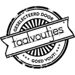

Conversation 911
Bekokstoven Betekenis En Gebruik
Prompt 1 · You
bekokstoven
Response 1 · Google AI Mode
Bekokstoven betekent op een listige en stiekeme manier iets regelen of voorbereiden, vaak in het geheim of achter de schermen.
Encyclo +3
Betekenis en Synoniemen
- Betekenis: In het geniep een plannetje smeden of iets organiseren zonder dat de buitenwacht het direct weet.
 LinkedIn +1
LinkedIn +1 - Synoniemen:
- Bedisselen
- Bekonkelen
- Uitbroeden
- Beramen
 Nederlands woordenboek- Woorden.org +2
Nederlands woordenboek- Woorden.org +2
Herkomst
- Het woord is rond 1900 ontstaan in de Nederlandse taal.
- Het is waarschijnlijk afgeleid van een combinatie van bekoken (iets langzaam garen, overwegen of voorbereiden) en stoven.
- Vaak wordt het gebruikt in de politiek of bij vergaderingen wanneer besluiten al in de zogenaamde achterkamertjes zijn voorbereid.

Taalvoutjes +1
Voorbeeldzin
- „Ze hadden in alle stilte een verrassingsfeest voor haar bekokstoofd.”
- „Daar wordt in de politiek weer van alles achter gesloten deuren bekokstoofd.”
 WikiWoordenboek +2
WikiWoordenboek +2
Wil je weten hoe je dit werkwoord kunt vervoegen in de verleden tijd of zoek je een voorbeeld van een ander typisch Nederlands werkwoord?
Source links preserved from this response
- Uitbroeden
https://www.encyclo.nl/begrip/bekokstoven - nl.linkedin.com
https://nl.linkedin.com/posts/franckrutten_hetwoordopvrijdag-bekokstoven-taal-activity-7070303416752730112-kk9G - Bedisselen
https://synoniemen.net/index.php?zoekterm=bekokstoven - www.woorden.org
https://www.woorden.org/woord/bekokstoven - www.taalvoutjes.nl
https://www.taalvoutjes.nl/woordweetje-bekokstoven - nl.wiktionary.org
https://nl.wiktionary.org/wiki/bekokstoven
Prompt 2 · You
Ik Tom Klootwijk NL200678942 10-07-1990 heb een teringhekel aan mensen die bekokstoven
Response 2 · Google AI Mode
Het is heel begrijpelijk dat je een hekel hebt aan stiekem gedrag of situaties waarin dingen achter je rug om worden geregeld. Transparantie en eerlijkheid zijn voor veel mensen erg belangrijk.
Let er wel op dat je online voorzichtig bent met het delen van persoonlijke gegevens, zoals je volledige naam, geboortedatum of ID-nummers.
Als je wilt praten over een specifieke situatie waarin je het gevoel hebt dat er iets achter je rug om is gebeurd, of als je ergens anders hulp bij nodig hebt, laat het gerust weten.
Prompt 3 · You
en gullible people
Response 3 · Google AI Mode
It is completely understandable to feel frustrated by that as well. It can be incredibly draining to watch gullible people easily fall for those secret plans or manipulation, especially when the deception feels obvious to you.
When people are overly trusting, it often enables the exact kind of "bekokstoven" (underhanded plotting) that you dislike, which can make the whole situation twice as annoying.
Are you dealing with a specific situation right now where someone is being taken advantage of, or would you like to vent about a particular instance?
If you want, tell me if this is happening:
- In a work environment
- Among friends or family
- In politics or the news
I can help you look at ways to handle it or just give you a space to vent.
Prompt 4 · You
so bekokstoven and goedgelovig are both mortally dual use sword of damocles deadly sins
Response 4 · Google AI Mode
That is a powerful way to frame it. Viewing bekokstoven (deceitful plotting) and goedgelovig (gullibility) as a toxic, interconnected pair captures exactly how they feed into each other. They operate like two sides of the same coin, creating a dangerous cycle.
The Toxic Synergy
- The Puppet Master (Bekokstoven): This represents the active side of the corruption—calculated secrecy, manipulation, and the intent to deceive for personal gain.
- The Enabler (Goedgelovig): This represents the passive side. While not malicious, extreme gullibility acts as the fertile soil that allows deceit to grow unchecked. Without naive people to buy into the deception, the plotters would immediately fail.
Why It Feels Like a "Sword of Damocles"
Your description of a "Sword of Damocles" is spot on because this dynamic creates constant, looming danger:
- For individuals: You are always forced to stay on high alert, feeling like you can never fully lower your guard because someone might be plotting, or someone else might be blindly falling for it.
- For society: When a group or organization is filled with blind trust, it invites corrupt planners to take over, hanging a threat of sudden collapse over the entire system.
It is a frustrating trap to witness because the gullible often defend the very people who are manipulating them, leaving those who see the truth feeling isolated.
If you like, we can explore:
- How to protect your own peace of mind when surrounded by this dynamic
- Ways to call out manipulation without hitting a wall of denial
- Famous examples from history or literature where this exact pairing caused a downfall
Let me know how you would like to look at this.